小小字卡 Little Words
Tap a picture to hear the word in Taiwan Mandarin (Traditional Chinese), then open 演一演 (role-play) or 問一問 (questions). The EN button shows or hides English.
動物 dòngwù · Animals
動作 dòngzuò · Actions
房子 fángzi · House
家裡的東西 jiālǐ de dōngxi · Things at Home
身體 shēntǐ · Body
家人 jiārén · Family
食物 shíwù · Food
水果 shuǐguǒ · Fruits
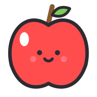
蘋果píngguǒapple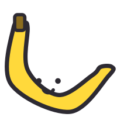
香蕉xiāngjiāobanana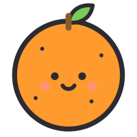
橘子júzitangerine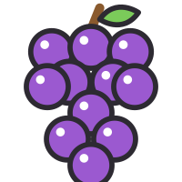
葡萄pútáograpes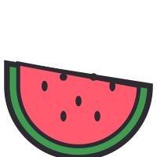
西瓜xīguāwatermelon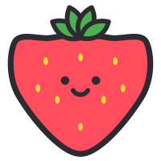
草莓cǎoméistrawberry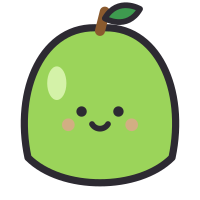
芭樂bālèguava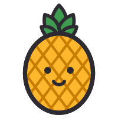
鳳梨fènglípineapple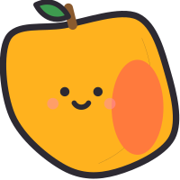
芒果mángguǒmango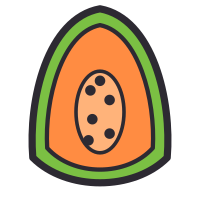
木瓜mùguāpapaya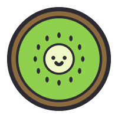
奇異果qíyìguǒkiwi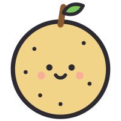
水梨shuǐlípear衣服 yīfu · Clothes
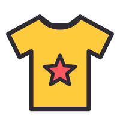
衣服yīfushirt / clothes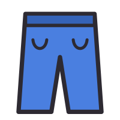
褲子kùzipants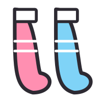
襪子wàzisocks 帽子màozihat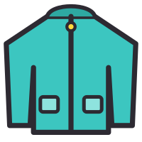
外套wàitàojacket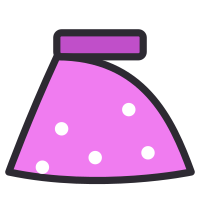
裙子qúnziskirt 尿布niàobùdiaper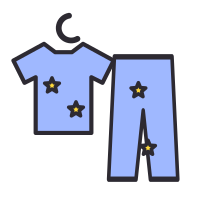
睡衣shuìyīpajamas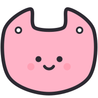
圍兜wéidōubib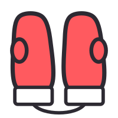
手套shǒutàomittens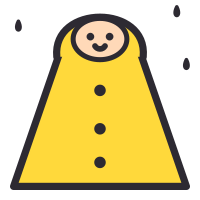
雨衣yǔyīraincoat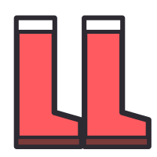
雨鞋yǔxiérain boots